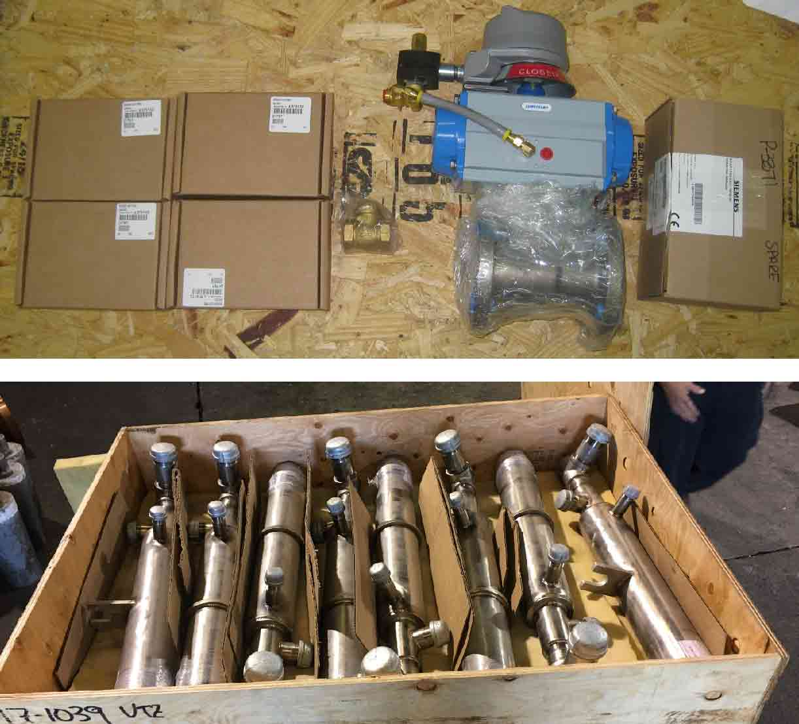
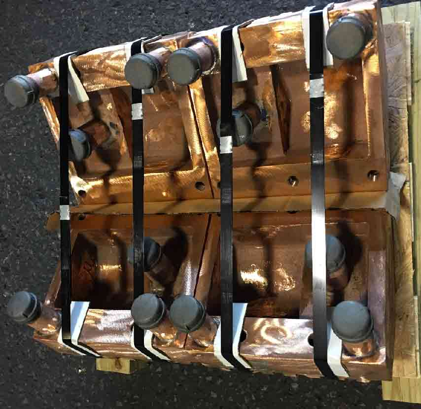

ACI provides a wide range of maintenance and repair options for our installed equipment as well as all high quality spare parts that are needed during operation. All ACI products and components to our equipment are available for quotation when needed. We can also expedite your request, for a reasonable fee, to help you avoid expensive downtime.
For onsite services and support, we are always willing to send one of our qualified engineers to help you troubleshoot and optimize. ACI expert engineers are always there to cover all your mechanical, electrical, automation or process needs.

